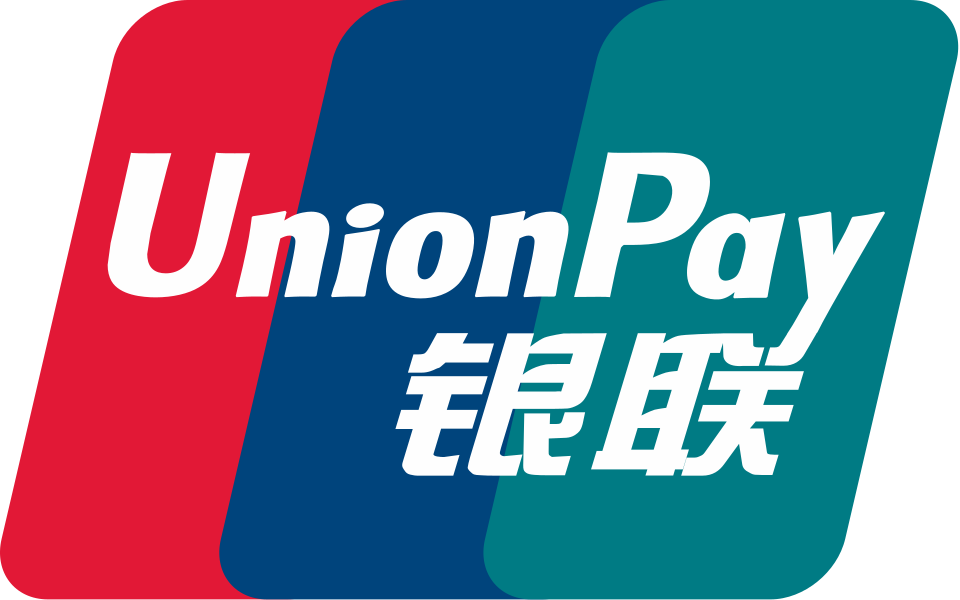
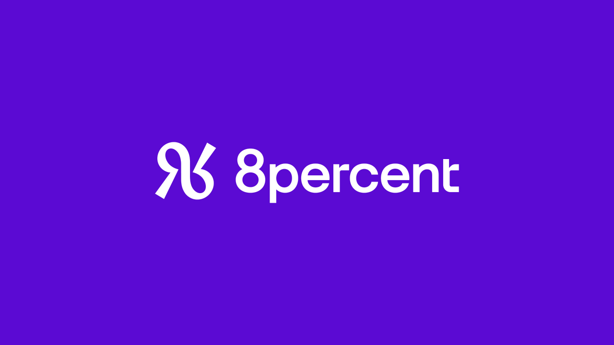
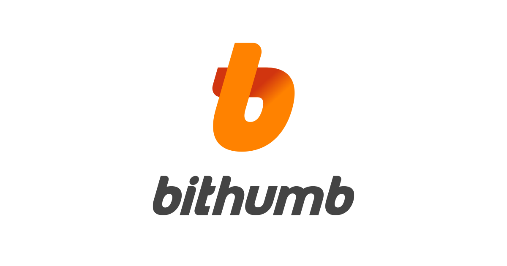
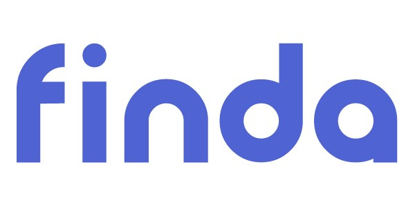
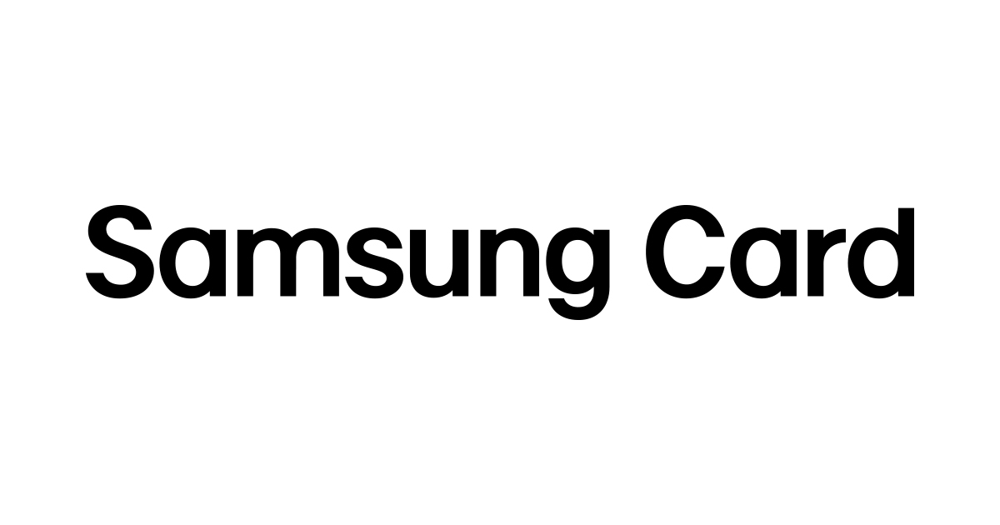

핀테크·결제 28
카드 네트워크, 결제 대행, 간편결제와 모바일 금융처럼 돈의 이동을 다루는 기술 브랜드를 모았습니다. 은행과 달리 이용자가 브랜드를 결제 버튼이나 앱 아이콘으로 먼저 만나는 경우가 많아, 작은 크기에서도 알아볼 수 있는 단순한 마크가 중요한 분야입니다. 브랜드 아틀라스에 수록된 핀테크·결제 28개를 로고와 함께 정리했습니다. 편입 기준은 위키데이터의 분류와 업종 정보, 그리고 편집자가 브랜드 설명을 확인한 경우로 한정했습니다.
다른 컬렉션 보기
컬렉션 전체 →기원 국가가 확인된 브랜드는 13개이며 미국 5개, 영국 2개, 한국 2개, 이탈리아 1개, 일본 1개 순으로 많습니다. 산업 분류로는 기술·전자 14개, 브랜드·비즈니스 14개에 걸쳐 있습니다. 설립연도가 확인된 브랜드는 14개이며 가장 오래된 곳은 1850년, 가장 최근은 2014년에 시작했습니다. 시기별로는 1900년 이전 1개, 1950~1999년 5개, 2000년 이후 8개입니다. 수록 자료로는 로고 이미지 26개, 연혁 타임라인 23개를 갖췄습니다. 이 가운데 5개는 공식 웹사이트가 일치하는 위키데이터 개체로 연결해 두었습니다.
핀테크·결제 목록
품질 점수 순 상위는 로고 타일로, 나머지는 가나다순 목록으로 보입니다.
 와이즈Wise영국 · 2011년
와이즈Wise영국 · 2011년와이즈(Wise)는 2011년 에스토니아 출신 크리스토 캐르만과 타베트 힌리쿠스가 영국 런던에서 창업한 핀테크로, 출범 당시 사명은…
 로빈후드Robinhood2013년
로빈후드Robinhood2013년로빈후드(Robinhood Markets)는 2013년 블라디미르 테네브와 바이주 바트가 설립한 미국 핀테크 기업으로, 수수료…
 비자Visa미국 · 1958년
비자Visa미국 · 1958년비자는 전 세계 카드 결제를 중계하는 미국의 결제 네트워크 기업이다.
 몬조Monzo
몬조Monzo몬조(Monzo)는 영국의 디지털 네오뱅크로, 물리적 지점 없이 스마트폰 앱만으로 운영되는 모바일 우선 은행이다.
 코인베이스Coinbase미국 · 2012년
코인베이스Coinbase미국 · 2012년코인베이스(Coinbase)는 2012년 미국 샌프란시스코에서 설립된 암호화폐 거래 플랫폼으로, 비트코인을 비롯한 디지털 자산을 일반 사용자가…
 페이세이프Paysafe영국
페이세이프Paysafe영국페이세이프(Paysafe)는 영국에 본사를 둔 다국적 온라인 결제·디지털 지갑 기업이다.
 페이팔Paypal미국 · 1998년
페이팔Paypal미국 · 1998년페이팔은 1998년 미국에서 출발해 온라인 송금과 결제를 대중화한 핀테크 기업으로, 이베이 거래의 표준 결제 수단으로 성장한 뒤 독립 상장해…
 마스터카드Mastercard1966년
마스터카드Mastercard1966년마스터카드는 1966년 미국 은행들이 결성한 인터뱅크 카드 협회에서 출발한 글로벌 결제 네트워크다.
 애프터페이Afterpay호주
애프터페이Afterpay호주애프터페이(Afterpay)는 호주에서 출발한 후불결제(BNPL, Buy Now Pay Later) 서비스로, 소비자가 상품을 즉시 구매한 뒤…
 토스Toss
토스Toss토스(Toss)는 비바리퍼블리카가 운영하는, 간편 송금을 시작으로 결제·대출·증권·보험을 아우르는 모바일 종합 금융 슈퍼앱이다.
 두나무Dunamu한국 · 2012년
두나무Dunamu한국 · 2012년두나무(Dunamu)는 한국 1위 암호화폐 거래소 업비트(Upbit)를 운영하는 핀테크·블록체인 기업으로, 2012년 송치형이 창업했다.
카카오페이Kakao Pay2014년카카오페이(Kakao Pay)는 카카오 계열의 모바일 간편결제·디지털 금융 기업으로, 2014년 서비스 시작 후 2017년 분사했다.

유니온페이UnionPay2002년유니온페이(UnionPay)는 중궈인롄주식회사가 운영하는 중화인민공화국의 신용결제 브랜드이자, 중국을 중심으로 국제 신용카드와 직불카드 거래를…
아디옌Adyen네덜란드 · 2006년아디옌(Adyen)은 네덜란드 암스테르담에 본사를 둔 글로벌 결제 플랫폼 기업이다.
자비스앤빌런즈Jobis and Villains한국자비스앤빌런즈는 세금 환급 플랫폼 삼쩜삼을 운영하는 한국의 핀테크 스타트업이다.
 아메리칸 익스프레스American Express미국 · 1850년
아메리칸 익스프레스American Express미국 · 1850년아메리칸 익스프레스(American Express)는 미국 뉴욕에 본사를 둔 다국적 금융 서비스 기업이다.
현대카드Hyundai Card디자인경영으로 국내 카드시장 판도를 바꾼 카드사

8퍼센트8Percent중금리 대안금융을 표방한 국내 초기 P2P 대출 플랫폼
 뱅크샐러드Banksalad
뱅크샐러드Banksalad흩어진 내 금융 데이터를 한곳에 모은 자산관리 앱

빗썸Bithumb국내 최초로 가상자산 거래를 상용화한 거래소

핀다Finda여러 금융사 대출 상품을 한 번에 비교하는 핀테크 플랫폼
신한카드Shinhan CardLG카드 인수합병으로 업계 1위가 된 신한금융그룹 카드사

삼성카드Samsung Card삼성그룹 계열의 대형 신용카드 전문회사
 Bolt
BoltBolt은 온라인 쇼핑의 결제 단계를 빠르고 단순하게 만드는 체크아웃·원클릭 결제 핀테크 브랜드다.
 Bancomat이탈리아 · 1983년
Bancomat이탈리아 · 1983년BANCOMAT S.p.A.는 1983년 이탈리아 최초의 ATM 현금인출망에서 출발해 40년 넘게 운영돼 온 이탈리아 대표 결제·인출 사업자다.
 Chime미국
Chime미국Chime은 미국의 핀테크 기업으로, 자체 은행이 아니라 파트너 은행과 제휴해 모바일 앱 중심의 무수수료(no-fee) 입출금·저축 계좌를…
센드웨이브(Sendwave)는 2014년 설립된 모바일 우선 국제 송금 앱이다.
닛폰신판(日本信販, NICOS)은 1951년 도쿄에서 설립된 일본의 신용판매·할부금융 회사로, 쿠폰형 할부판매를 선구적으로 도입한…